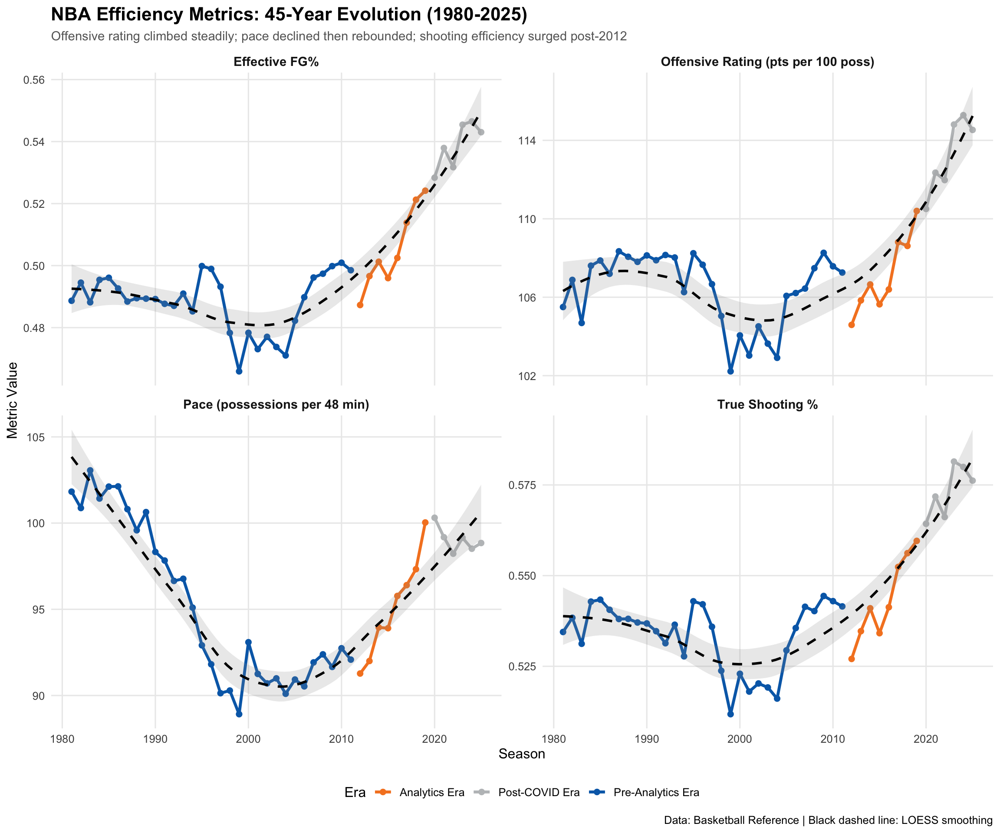
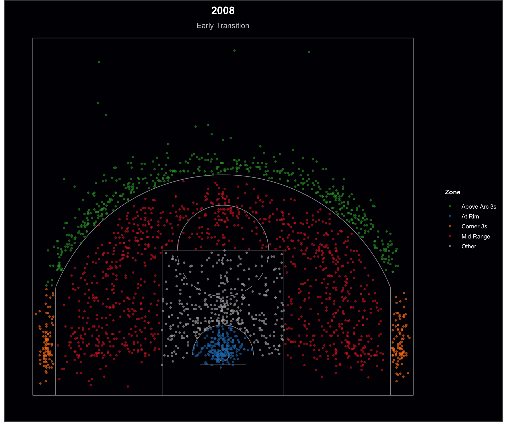
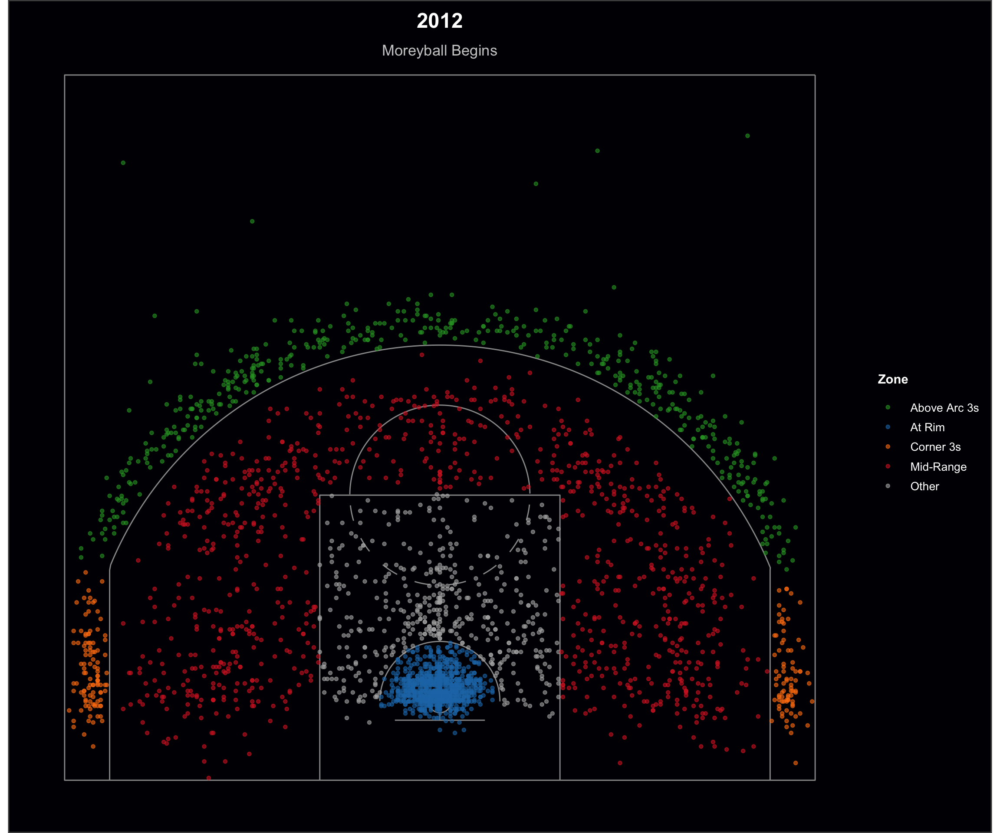
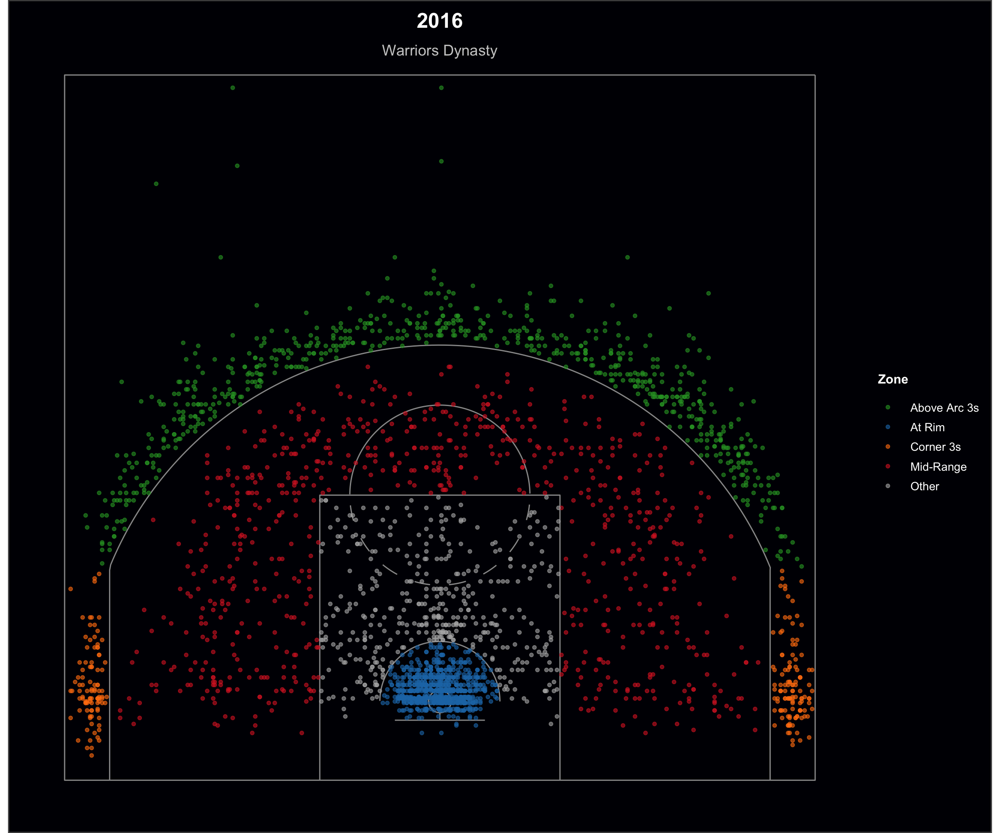
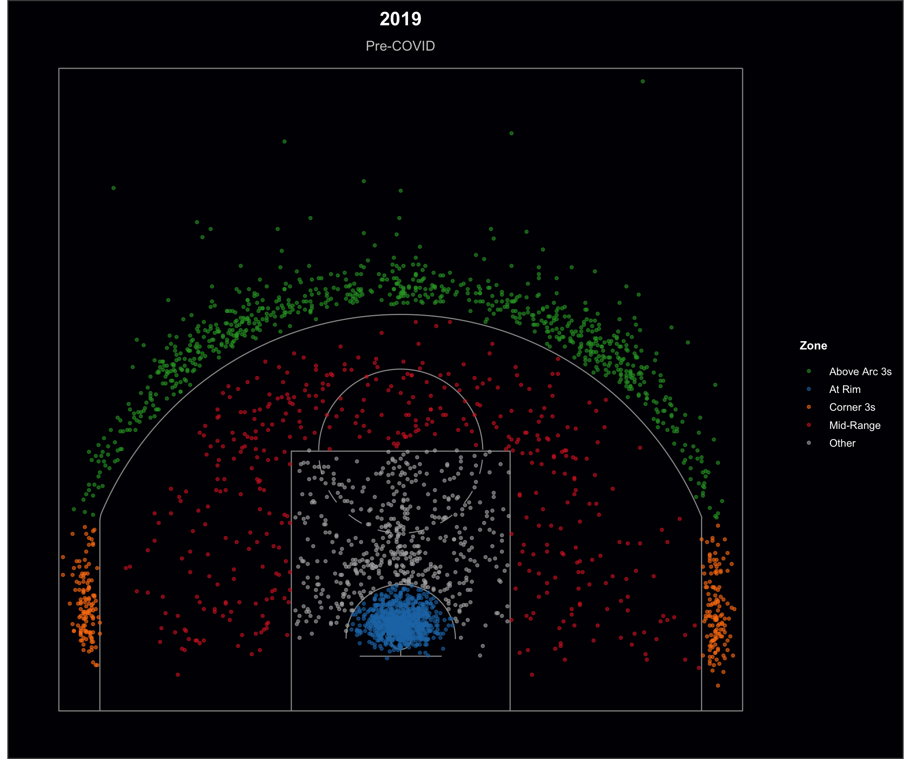
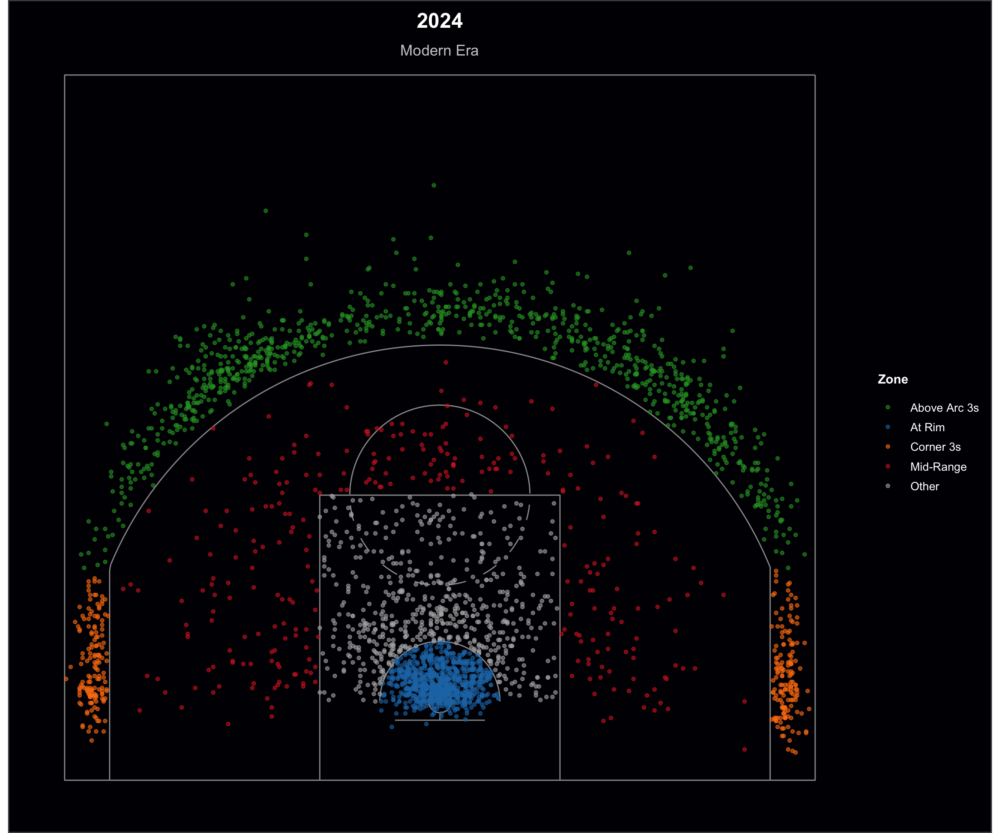
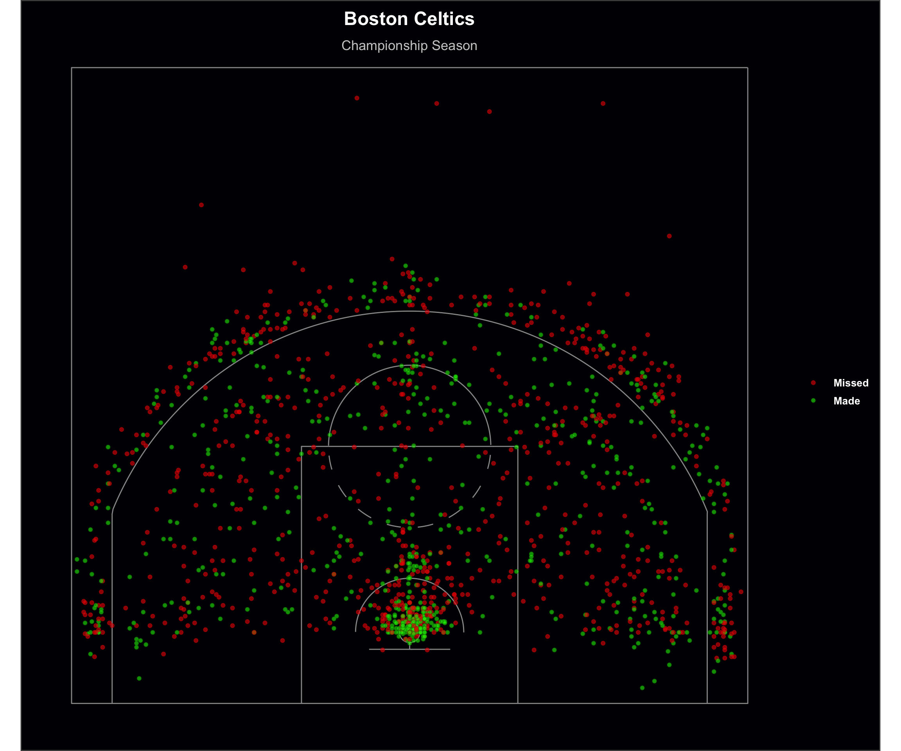
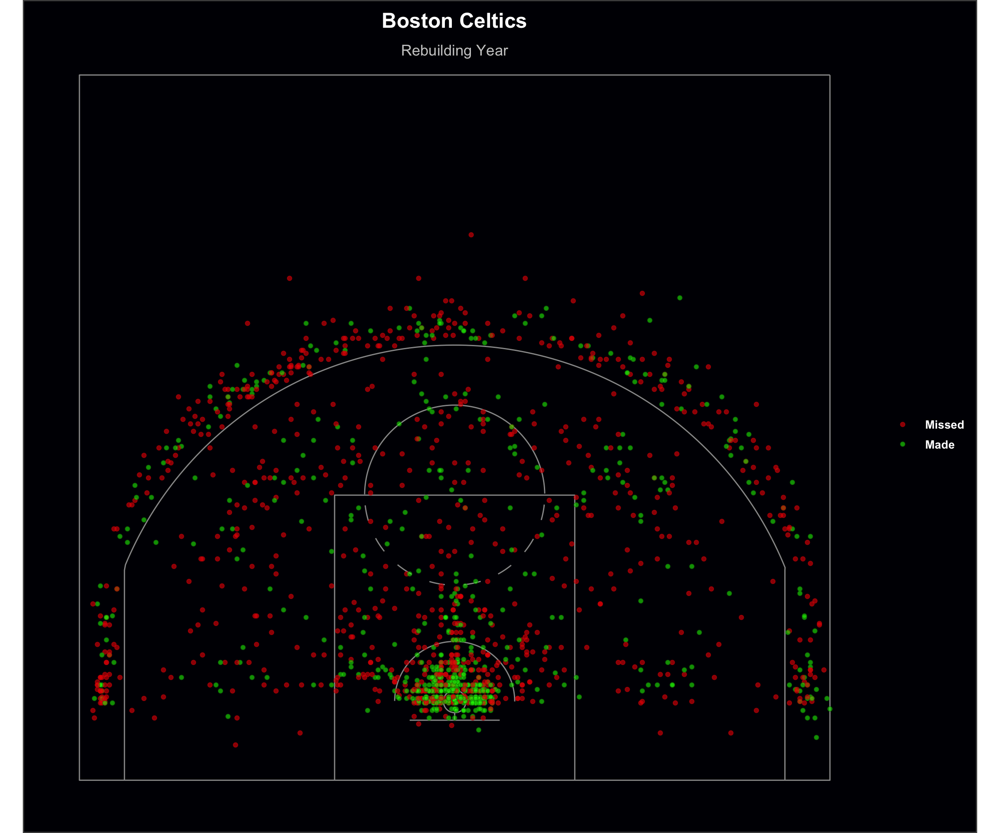
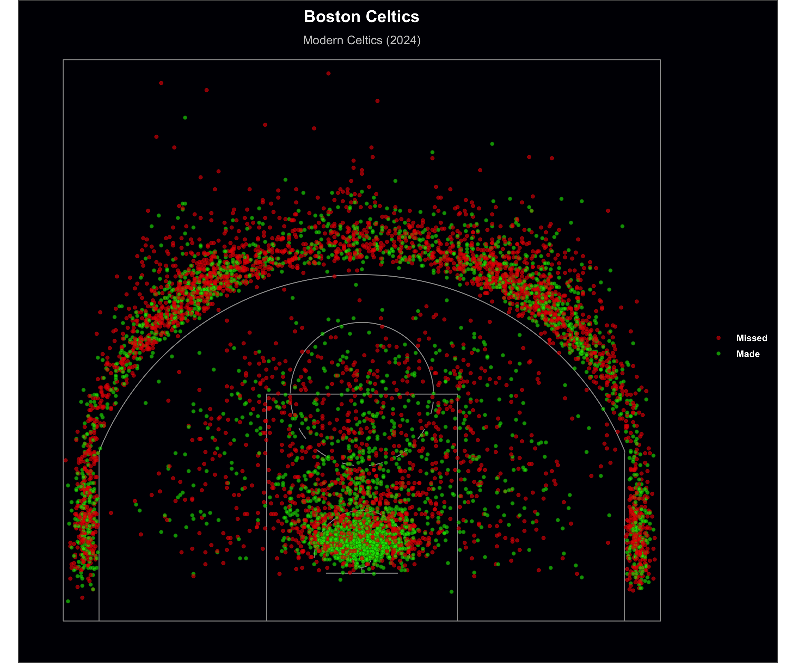

Code
library(tidyverse)
library(ggplot2)
library(plotly)
library(readr)
library(dplyr)
library(lubridate)
library(magick)
library(viridis)
library(patchwork)
library(cowplot)
theme_set(theme_minimal(base_size = 12))This analysis tells the story of the most dramatic strategic transformation in NBA history, particularly the shift from mid-range-heavy “iso-ball” to the analytics-optimized “Moreyball” offense that dominates today. Through the visualizations below, we can see how data-driven decision making fundamentally reshaped basketball strategy over 45 years.
library(tidyverse)
library(ggplot2)
library(plotly)
library(readr)
library(dplyr)
library(lubridate)
library(magick)
library(viridis)
library(patchwork)
library(cowplot)
theme_set(theme_minimal(base_size = 12))library(stringr)
all_adv_files <- list.files("data/adv_stats", pattern = "*.csv", full.names = TRUE)
all_adv_data <- map_df(all_adv_files, function(file) {
season_str <- str_extract(basename(file), "\\d{4}-\\d{2}")
season_year <- as.numeric(str_sub(season_str, 1, 4)) + 1
df <- read_csv(file, show_col_types = FALSE)
df$Season <- season_year
return(df)
})
league_avg <- all_adv_data %>%
group_by(Season) %>%
summarise(
ORtg = mean(`Unnamed: 10_level_0_ORtg`, na.rm = TRUE),
DRtg = mean(`Unnamed: 11_level_0_DRtg`, na.rm = TRUE),
Pace = mean(`Unnamed: 13_level_0_Pace`, na.rm = TRUE),
`3PAr` = mean(`Unnamed: 15_level_0_3PAr`, na.rm = TRUE),
`TS%` = mean(`Unnamed: 16_level_0_TS%`, na.rm = TRUE),
`eFG%` = mean(`Offense Four Factors_eFG%`, na.rm = TRUE),
.groups = "drop"
)
league_avg <- league_avg %>%
mutate(
Era = case_when(
Season < 2012 ~ "Pre-Analytics Era",
Season >= 2012 & Season < 2020 ~ "Analytics Era",
Season >= 2020 ~ "Post-COVID Era"
)
)
fig_3par <- plot_ly(league_avg,
x = ~Season, y = ~`3PAr`,
color = ~Era,
colors = c(
"Pre-Analytics Era" = "#006bb6",
"Analytics Era" = "#f58426",
"Post-COVID Era" = "#bec0c2"
),
type = "scatter", mode = "lines+markers",
marker = list(size = 6),
line = list(width = 3),
hovertemplate = paste(
"<b>Season:</b> %{x}<br>",
"<b>3PAr:</b> %{y:.0%}<br>",
"<extra></extra>"
)
) %>%
layout(
title = list(
text = "The Analytics Revolution: 3-Point Attempt Rate (1980-2025)",
font = list(size = 15, weight = "bold")
),
xaxis = list(title = "Season"),
yaxis = list(title = "3-Point Attempt Rate (3PA / FGA)", tickformat = ".0%"),
hovermode = "closest",
template = "plotly_white",
annotations = list(
list(
x = 2012, y = 0.44, text = "Analytics Era Begins",
showarrow = FALSE,
font = list(size = 8, color = "#f58426", weight = "bold"),
xanchor = "left", xshift = 5
)
),
shapes = list(
list(
type = "line", x0 = 2012, x1 = 2012, y0 = 0, y1 = 1,
line = list(color = "#f58426", width = 2, dash = "dash"),
yref = "paper"
)
)
)
fig_3parFor three decades, from 1980 to 2011, NBA teams treated the three-pointer as a supplementary weapon rather than a foundational strategy, with attempt rates hovering consistently between 20% and 28%. Between 1995 and 1997, the rate peaked at 21% due to the league temporarily shortening the three-point line. However, from 1997 to 1998, we see a clear decline in attempts as the league reverted to the original distance. During this era, the mid-range jumper, the signature shot of basketball mastery taught in gyms from youth leagues to the professional ranks, remained dominant. But in 2012, Houston Rockets GM Daryl Morey’s analytics department did the math and exposed a harsh truth: mid-range shots, averaging roughly 0.8 points per attempt, were the least efficient in basketball, while three-pointers yielded significantly higher returns. Observing the visualization, we can clearly identify a structural break around 2012, as three-point attempt rates surge from roughly 28% to over 42% by 2025. Yet this shift raises a crucial question: If teams started shooing more threes, did it actually make them better or just different?
efficiency_long <- league_avg %>%
select(Season, ORtg, Pace, `TS%`, `eFG%`, Era) %>%
pivot_longer(
cols = c(ORtg, Pace, `TS%`, `eFG%`),
names_to = "Metric",
values_to = "Value"
)
efficiency_facet <- ggplot(efficiency_long, aes(x = Season, y = Value, color = Era)) +
geom_line(size = 1.2) +
geom_point(size = 2) +
geom_smooth(method = "loess", se = TRUE, alpha = 0.2, color = "black", linetype = "dashed") +
facet_wrap(~Metric,
scales = "free_y", ncol = 2,
labeller = labeller(Metric = c(
"ORtg" = "Offensive Rating (pts per 100 poss)",
"Pace" = "Pace (possessions per 48 min)",
"TS%" = "True Shooting %",
"eFG%" = "Effective FG%"
))
) +
scale_color_manual(values = c(
"Pre-Analytics Era" = "#006bb6",
"Analytics Era" = "#f58426",
"Post-COVID Era" = "#bec0c2"
)) +
labs(
title = "NBA Efficiency Metrics: 45-Year Evolution (1980-2025)",
subtitle = "Offensive rating climbed steadily; pace declined then rebounded; shooting efficiency surged post-2012",
x = "Season",
y = "Metric Value",
color = "Era",
caption = "Data: Basketball Reference | Black dashed line: LOESS smoothing"
) +
theme_minimal(base_size = 12) +
theme(
plot.title = element_text(face = "bold", size = 16),
plot.subtitle = element_text(size = 11, color = "gray40"),
strip.text = element_text(face = "bold", size = 11),
legend.position = "bottom",
panel.grid.minor = element_blank()
)
efficiency_facet
Observing the visualization, we can see that attempting more three pointers did, in fact, make teams measurably better. The chart tells a story spanning 45 years of performance gains driven by strategic optimization. Offensive Rating rose by roughly 11%, from 104 in 1980 to 115 in 2025, with the sharpest improvements occurring after 2012, precisely when three point attempt rates began to surge. We also see True Shooting Percentage climb from 53% to 58%, reinforcing the conclusion that teams became more efficient scorers by optimizing the quality of their shots. The Pace metric follows a U-shaped trajectory, reflecting the evolution of play styles over time. It went from the fast, run and gun tempo of the 1980s, to the slowed isolation heavy 2000s, and finally rebounding post 2012 as teams embraced a more controlled yet efficient rhythm. Lastly, the rise in Effective Field Goal Percentage suggests that these improvements weren’t merely the result of drawing more fouls. Teams didn’t shoot more threes by accident; they made a deliberate, data driven decision to sacrifice mid range shots in exchange for more threes and attempts at the rim.
shot_files <- list.files("data/shot_location", pattern = "NBA_.*_Shots.csv", full.names = TRUE)
extract_season <- function(filename) {
year_str <- str_extract(basename(filename), "\\d{4}")
return(as.numeric(year_str))
}
shot_data_sample <- map_df(shot_files, function(file) {
season_year <- extract_season(file)
df <- read_csv(file, show_col_types = FALSE, n_max = 50000)
df$Season <- season_year
return(df)
})
zone_distribution <- shot_data_sample %>%
filter(!is.na(BASIC_ZONE)) %>%
group_by(Season, BASIC_ZONE) %>%
summarise(
Shot_Count = n(),
.groups = "drop"
) %>%
group_by(Season) %>%
mutate(
Shot_Percentage = Shot_Count / sum(Shot_Count) * 100
) %>%
ungroup()
key_zones <- c(
"Mid-Range", "Restricted Area", "Above the Break 3",
"Left Corner 3", "Right Corner 3"
)
zone_trends <- zone_distribution %>%
filter(BASIC_ZONE %in% key_zones) %>%
mutate(
Zone_Category = case_when(
BASIC_ZONE == "Mid-Range" ~ "Mid-Range (≈8–22 ft)",
BASIC_ZONE == "Restricted Area" ~ "At Rim",
BASIC_ZONE %in% c("Left Corner 3", "Right Corner 3") ~ "Corner 3s",
BASIC_ZONE == "Above the Break 3" ~ "Non-Corner 3s (Arc)",
TRUE ~ BASIC_ZONE
)
) %>%
group_by(Season, Zone_Category) %>%
summarise(Shot_Percentage = sum(Shot_Percentage), .groups = "drop")
zone_trends <- zone_trends %>%
mutate(
tooltip_text = paste0(
"Season: ", Season, "\n",
"Zone: ", Zone_Category, "\n",
"Percentage: ", round(Shot_Percentage, 0), "%"
)
)
rect_data <- data.frame(
xmin = 2012, xmax = 2015,
ymin = 0, ymax = 45
)
midrange_line_plot <- ggplot(zone_trends, aes(
x = Season, y = Shot_Percentage,
color = Zone_Category,
linetype = Zone_Category,
text = tooltip_text
)) +
geom_rect(
data = rect_data, inherit.aes = FALSE,
aes(xmin = xmin, xmax = xmax, ymin = ymin, ymax = ymax),
fill = "#f58426", alpha = 0.1
) +
geom_line(size = 1.5) +
geom_point(size = 2.5) +
annotate("text",
x = 2013.5, y = 42, label = "Analytics\nRevolution", fontface = "bold", color = "#f58426"
) +
scale_color_manual(values = c(
"Mid-Range (≈8–22 ft)" = "#bec0c2",
"At Rim" = "#006bb6",
"Corner 3s" = "#f58426",
"Non-Corner 3s (Arc)" = "#000000"
)) +
scale_linetype_manual(values = c(
"Mid-Range (≈8–22 ft)" = "solid",
"At Rim" = "solid",
"Corner 3s" = "dashed",
"Non-Corner 3s (Arc)" = "dotted"
)) +
labs(
title = "The Death of the Midrange: Shot Zone Trends (2004–2025)",
subtitle = "Mid-range declined while arc and corner 3s surged; at-rim remained relatively stable",
x = "Season", y = "Percentage of Total Shots (%)",
color = "Shot Zone", linetype = "Shot Zone"
) +
theme_minimal(base_size = 10) +
theme(
plot.title = element_text(face = "bold", size = 13),
plot.subtitle = element_text(size = 9, color = "gray40"),
axis.title = element_text(size = 9),
axis.text = element_text(size = 8),
legend.position = "bottom",
legend.title = element_text(face = "bold", size = 9),
legend.text = element_text(size = 8),
panel.grid.minor = element_blank()
) +
scale_y_continuous(limits = c(0, 45), labels = function(x) paste0(x, "%"))
p <- ggplotly(midrange_line_plot, tooltip = "text")
p %>% style(mode = "lines+markers")We can clearly see the trade-off in the visualization above. Mid-range shots, which accounted for about 35% of all attempts in 2004, collapsed to just 13% by 2025. Meanwhile, corner threes doubled, and above-the-arc threes surged from 13% to 34%. Shots at the rim remained relatively stable throughout this period. Around the 2015–2016 season, three-point attempts beyond the arc surpassed mid-range shots for the first time in NBA history. This shift reflects teams’ evolving approach: attack the rim for high-percentage looks, draw fouls or create putback opportunities, or shoot threes for higher expected value
source("NBA_shots_tutorial.R")
shots_2004 <- shot_data_sample %>%
filter(Season == 2004, !is.na(LOC_X), !is.na(LOC_Y), LOC_Y <= 47)
zone_check_2004 <- shots_2004 %>%
filter(!is.na(BASIC_ZONE)) %>%
group_by(BASIC_ZONE) %>%
summarise(Count = n(), .groups = "drop") %>%
mutate(Percentage = Count / sum(Count) * 100) %>%
arrange(desc(Count))
years_to_plot <- c(2004, 2008, 2012, 2016, 2019, 2024)
create_court_for_year <- function(year) {
shots_year <- shot_data_sample %>%
filter(Season == year, !is.na(LOC_X), !is.na(LOC_Y), LOC_Y <= 47, !is.na(BASIC_ZONE))
shots_year <- shots_year %>%
mutate(
Zone_Category = case_when(
BASIC_ZONE == "Mid-Range" ~ "Mid-Range",
BASIC_ZONE == "Restricted Area" ~ "At Rim",
BASIC_ZONE %in% c("Left Corner 3", "Right Corner 3") ~ "Corner 3s",
BASIC_ZONE == "Above the Break 3" ~ "Above Arc 3s",
TRUE ~ "Other"
)
)
if (nrow(shots_year) > 3000) {
set.seed(42) # For reproducibility
shots_year <- shots_year %>% sample_n(3000)
}
subtitle <- case_when(
year == 2004 ~ "Pre-Analytics",
year == 2008 ~ "Early Transition",
year == 2012 ~ "Moreyball Begins",
year == 2016 ~ "Warriors Dynasty",
year == 2019 ~ "Pre-COVID",
year == 2024 ~ "Modern Era",
TRUE ~ ""
)
plot_court(court_themes$dark, use_short_three = FALSE) +
geom_point(
data = shots_year,
aes(x = LOC_X, y = LOC_Y, color = Zone_Category),
size = 1.2,
alpha = 0.6
) +
scale_color_manual(
values = c(
"Mid-Range" = "#d62728",
"At Rim" = "#1f77b4",
"Corner 3s" = "#ff7f0e",
"Above Arc 3s" = "#2ca02c",
"Other" = "gray70"
),
name = "Zone"
) +
labs(
title = as.character(year),
subtitle = subtitle
) +
theme(
plot.title = element_text(hjust = 0.5, size = 18, face = "bold", color = "white"),
plot.subtitle = element_text(hjust = 0.5, size = 13, color = "gray80"),
plot.background = element_rect(fill = "#000004", color = "gray30", size = 1),
panel.background = element_rect(fill = "#000004"),
legend.position = "right",
legend.background = element_rect(fill = "#000004"),
legend.title = element_text(size = 11, face = "bold", color = "white"),
legend.text = element_text(size = 10, color = "white"),
legend.key = element_rect(fill = "#000004"),
legend.key.size = unit(0.6, "cm")
)
}
court_plots <- lapply(years_to_plot, create_court_for_year)





teams_2024 <- shot_data_sample %>%
filter(Season == 2024, !is.na(TEAM_NAME)) %>%
group_by(TEAM_NAME) %>%
summarise(Count = n(), .groups = "drop") %>%
arrange(desc(Count))
create_celtics_court <- function(year) {
celtics_shots <- shot_data_sample %>%
filter(
Season == year,
TEAM_NAME == "Boston Celtics",
!is.na(LOC_X), !is.na(LOC_Y),
LOC_Y <= 47
)
subtitle <- case_when(
year == 2004 ~ "Big 3 Era Begins",
year == 2008 ~ "Championship Season",
year == 2012 ~ "Late Big 3 Era",
year == 2016 ~ "Rebuilding Year",
year == 2019 ~ "Tatum/Brown Era",
year == 2025 ~ "Modern Celtics (2024)",
TRUE ~ ""
)
plot_court(court_themes$dark, use_short_three = FALSE) +
geom_point(
data = celtics_shots,
aes(x = LOC_X, y = LOC_Y, color = SHOT_MADE, fill = SHOT_MADE),
size = 1.5,
shape = 21,
stroke = 0.5,
alpha = 0.6
) +
scale_color_manual(
values = c("TRUE" = "green4", "FALSE" = "red3"),
labels = c("TRUE" = "Made", "FALSE" = "Missed")
) +
scale_fill_manual(
values = c("TRUE" = "green2", "FALSE" = "red2"),
labels = c("TRUE" = "Made", "FALSE" = "Missed")
) +
labs(
title = paste("Boston Celtics"),
subtitle = subtitle
) +
theme(
plot.title = element_text(hjust = 0.5, size = 18, face = "bold", color = "white"),
plot.subtitle = element_text(hjust = 0.5, size = 13, color = "gray80"),
plot.background = element_rect(fill = "#000004", color = "gray30", size = 1),
panel.background = element_rect(fill = "#000004"),
legend.position = "right",
legend.background = element_rect(fill = "#000004"),
legend.title = element_blank(),
legend.text = element_text(size = 10, color = "white", face = "bold"),
legend.key = element_rect(fill = "#000004"),
legend.key.size = unit(0.6, "cm")
)
}
celtics_years <- c(2004, 2008, 2012, 2016, 2019, 2025)
celtics_plots <- lapply(celtics_years, create_celtics_court)





From the first visualization, we can see that in the pre-analytics era there was a heavy concentration of mid-range shots. By 2012, however, we begin to see the influence of “Moreyball” reshaping the league, as shot distributions tighten around above-the-arc three-pointers. As we move into the modern era, mid-range attempts become increasingly sparse, while above-the-arc threes grow more frequent and form even tighter clusters. The outliers in the visualization represent the greatest shooter of all time, Stephen Curry, whose style helped redefine offensive strategy. This transformation is further illustrated by the Boston Celtics: in 2024, they recorded the highest volume of above-the-arc three-point attempts in team history. Their strategic embrace of analytics and shot optimization directly contributed to their success; culminating in their NBA Finals victory.
attendance_data <- all_adv_data %>%
group_by(Season) %>%
summarise(
Total_Attendance = sum(`Unnamed: 29_level_0_Attend.`, na.rm = TRUE),
Avg_Attendance = mean(`Unnamed: 30_level_0_Attend./G`, na.rm = TRUE),
.groups = "drop"
) %>%
filter(Season >= 2000)
dkng <- read_csv("data/financial/DKNG_daily.csv", show_col_types = FALSE)
dkng <- dkng %>%
mutate(
Date = as.Date(Date),
Year = year(Date)
)
dkng_yearly <- dkng %>%
group_by(Year) %>%
summarise(
Avg_Close = mean(`Adj Close`, na.rm = TRUE),
Volatility = sd(Returns, na.rm = TRUE) * sqrt(252),
.groups = "drop"
)
attendance_plot <- ggplot(attendance_data, aes(x = Season, y = Total_Attendance / 1e6)) +
geom_line(color = "#006bb6", size = 1.5) +
geom_point(color = "#006bb6", size = 3) +
annotate("rect",
xmin = 2020, xmax = 2021, ymin = 0, ymax = 25,
alpha = 0.2, fill = "#f58426"
) +
annotate("text",
x = 2020.5, y = 24,
label = "COVID-19",
size = 4, fontface = "bold", color = "#f58426"
) +
labs(
title = "NBA Attendance Collapse",
x = "Season",
y = "Total Attendance (Millions)"
) +
theme_minimal(base_size = 12) +
theme(
plot.title = element_text(face = "bold", size = 14),
panel.grid.minor = element_blank()
) +
scale_y_continuous(labels = scales::comma, limits = c(0, 25))
dkng_plot <- ggplot(dkng, aes(x = Date, y = `Adj Close`)) +
geom_line(color = "#f58426", size = 0.8) +
annotate("text",
x = as.Date("2020-04-23"), y = 16,
label = "DKNG IPO",
size = 2.5, fontface = "bold", color = "#f58426", vjust = 1
) +
labs(
title = "DraftKings (DKNG) Stock Price (Daily)",
x = "Date",
y = "Adj Close Price ($)"
) +
theme_minimal(base_size = 12) +
theme(
plot.title = element_text(face = "bold", size = 14),
panel.grid.minor = element_blank()
)
combined_plot <- attendance_plot | dkng_plot
combined_plot + plot_annotation(
title = "COVID-19 Impact: Attendance Collapse vs Sports Betting Boom",
theme = theme(
plot.title = element_text(size = 16, face = "bold", hjust = 0.5),
plot.subtitle = element_text(size = 12, hjust = 0.5, color = "gray40")
)
)
March 2020 presented basketball with an unprecedented event. NBA attendance collapsed by 90% virtually overnight as the season was suspended following Rudy Gobert’s positive COVID-19 test. This was followed by the Orlando bubble season with zero fans, and then the 2020–21 campaign with limited capacity. The league’s normal rhythms and fan energy were completely disrupted. However, while the NBA paused, online sports betting exploded. DraftKings went public in April 2020, and its stock price surged as online betting became legalized across more states. If anything, the pandemic accelerated, rather than slowed, the connection between basketball and analytics, as betting markets quickly became the primary way many fans engaged with the sport.